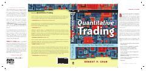

QTMustaqil treyderlar uchun algoritmik va kvant savdo tizimlarini yaratish bo'yicha qo'llanma.
Ushbu kitob mustaqil treyderlar uchun o'zlarining algoritmik savdo biznesini qurish bo'yicha amaliy qo'llanmadir. Muallif kvant strategiyalarini ishlab chiqish, MATLAB va Excel yordamida test qilish hamda risklarni boshqarish usullarini batafsil tushuntiradi.